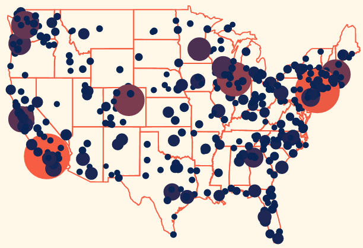

Mental Illness in America
March 26, 2017
See the prevelance of Mental Illness in the United States. Rates include any mental illness, severe mental illness, depressed episodes, and thoughts of suicide.
Mental Illness in America
March 26, 2017
See the prevelance of Mental Illness in the United States. Rates include any mental illness, severe mental illness, depressed episodes, and thoughts of suicide.
UFO Sightings
March 17, 2017
View recent sightings of UFOs in the United States and Canada. See locations and timelines of these bizzare sights.
Server Hacks
February 1, 2017
See the number of people that attempt to hack the server that this website is running on. See the pathway from where they are from to where they are going, and the total number of attempts by country.
Women's March 2017
January 27, 2017
See how many people marched in the 2017 Women's March on Washington all across the nation. Also see a comparison between locations of the protests and the outcme of the 2016 election.
